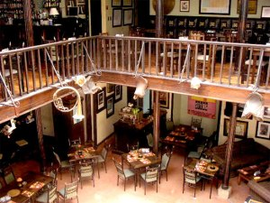
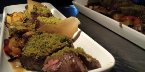
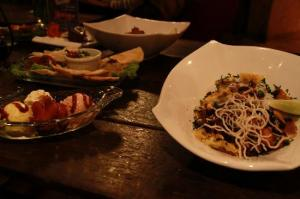
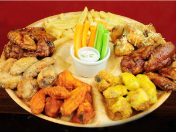

Restaurantes Gourmet
Eucalyptus :Por más de 10 años, el Café Eucalyptus ha estado a la vanguardia de la Cuenca culinaria. Ubicado en una casa colonial reformada, nos encontrará a sólo una cuadra del Parque Calderón, en la zona hotelera.
Nuestra cocina ofrece más de 70 platos internacionales, incluyendo pastas, mariscos, auténticos curries indios y
tailandeses y 20 platos vegetarianos. Nuestro bar es uno de los mejor surtidos en Ecuador.

La mejor Comida 4 estrellas
Costa

Fried Bananas Restaurant : Aromas, sabores, texturas y colores combinados con sencillez e imaginación son los ingredientes principales de nuestros platos.
En un ambiente agradable y acogedor disfrute de las especialidades del chef exquisitamente preparadas con productos de calidad al mejor estilo Fried Bananas.
Nos especializamos en brindar el servicio de cafetería y resturante, en un espacio tranquilo y agradable.
sierra

Restaurante Urko
Utilizamos ingredientes de nuestro país, provenientes de comunidades agrícolas de la costa, sierra, Amazonia y región insular del Ecuador. Hacemos comida ecuatoriana, dada por los sabores y elementos que a lo largo de la historia han formado parte de nuestra vida, y presentamos nuestros productos en una escena contemporánea que refleja
la pureza, la esencia y el origen de nuestros alimentos
frecemos dentro y fuera del local, preparación de menús personalizados para todo tipo de eventos y celebraciones.
sus puertas para ofrecer a los comensales guayaquileños la mejor opción en comida típica ecuatoriana.
Ofrecemos dentro y fuera del local, preparación de menús personalizados para todo tipo de eventos y celebraciones.
Agasaje a su familia, amigos o colaboradores de la mejor forma con la mejor comida.
Amazonia

Ofrecemos dentro y fuera del local, preparación de menús personalizados para todo tipo de eventos y celebraciones.
Lo mejor en comidas con Verde…Visítanos en Las Monjas 308 y Calle 4ta, Urdesa
En un ambiente agradable y acogedor disfrute de las especialidades del chef exquisitamente preparadas con productos de calidad al mejor estilo Fried Bananas.
Nos especializamos en brindar el servicio de cafetería y resturante, en un espacio tranquilo y agradable.
frecemos dentro y fuera del local, preparación de menús personalizados para todo tipo de eventos y celebraciones.